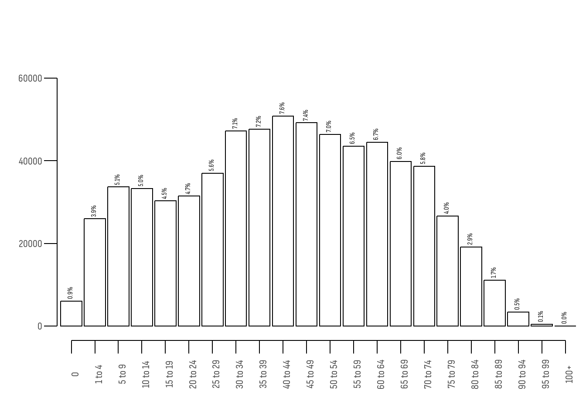
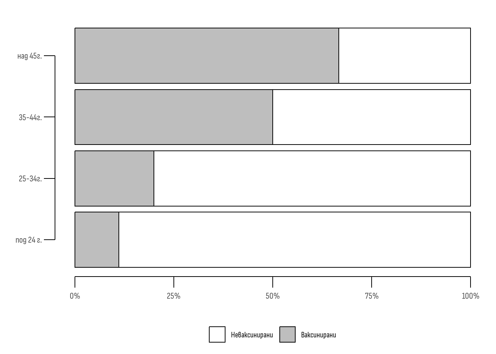

| Възраст | Общо | Починали | НС Леталитет1 | Стандарт2 | С Леталитет3 | |
|---|---|---|---|---|---|---|
| Ваксинирани | под 24 г. | 500 | 250 | 0.5 | 0.500 | 0.2500 |
| 25-34г. | 500 | 300 | 0.6 | 0.250 | 0.1500 | |
| 35-44г. | 1000 | 700 | 0.7 | 0.125 | 0.0875 | |
| над 45г. | 2000 | 1600 | 0.8 | 0.125 | 0.1000 | |
| Неваксинирани | под 24 г. | 4000 | 2400 | 0.6 | 0.500 | 0.3000 |
| 25-34г. | 2000 | 1400 | 0.7 | 0.250 | 0.1750 | |
| 35-44г. | 1000 | 800 | 0.8 | 0.125 | 0.1000 | |
| над 45г. | 1000 | 900 | 0.9 | 0.125 | 0.1125 | |
| 1 Нестандартизиран леталитет | ||||||
| 2 Изчислен спрямо неваксинираните | ||||||
| 3 Стандартизиран леталитет | ||||||
Основна терминология. Стандартизация
Bulgarian
Medical Statistics
Medicine | 2nd year
Dental medicine | 2nd year
Материалът представя основната терминология за екстензивни и интензивни показатели както и метода на директна стандартизация.
Защо учим статистика?
- Статистиката е метод чрез който данните се превръщат в информация [1].
- Статистиката помага в ежедневната медицинска практика, чрез създаване на клинични наръчници или политики в здравеопазването.
- Статистиката е езикът на науката, тя помага както на пациентите, така и за поддържане на здравето в обществото [2,3].
С какво ще ни помогне статистиката?
- Да взимаме информирани решения в ежедневната ни практика.
- Да разберем как работи науката.
- За да четем критично нова научна информация [4].
Какво няма да научите?
Понастоящем статистиката е основата на “науката за данните” и изкуствения интелект (data science). В съчетание със сложна математика, програмиране и доза креативност, тази нова дисциплина навлиза във всекидневния ни живот докато пазаруваме, учим и работим. Всички технологии базирани на “изкуствен интелект” в същност използват статистика 1. В този курс, обаче целта е да придобиете най-основните знания за това как работи статистиката, каква е логиката в нея и какъв език използва [1].
Терминология
За да “не сме изгубени в превода”, въвеждаме някои основни термини, обяснени с примери [1,5].
Абсолютни величини
WarningОпределение
Това са числа, които количествено характеризират обемите на статистическите съвкупности или на части от тях. Те представляват стойност на конкретни статистически признаци.
Абсолютните величини са винаги наименовани с конкретни мерни единици.
Статистическите изследвания обикновено започват с анализ на абсолютните величини, но те не са достатъчни за директни сравнения в пространствено-времеви аспект [2].
Примери за абсолютни величини
Систолното артериално налягане измерено в mmHg е абсолютна величина - има числова стойност, мерна единица и количествено характеризира определен признак. Кръвната захар измерена в mmol/l също е абсолютна величина - отново е число с мерна единица и измерващо конкретен показател.
Относителни величини
WarningОпределение
Те се изчисляват при разделяне на две абсолютни величини. Представят се като коефициенти, а при умножение по 100 или 1000 - в проценти или промили [1].
Примери за относителни величини
В медицината често използваме относителни величини. Например, когато измерваме помпената функция на сърцето можем да измерим количеството кръв, което постъпва в аортата след едно сърдечно съкращение. Това е абсолютната величина ударен обем. Хората с по-висок ръст и по-високо тегло (по-едро телосложение) имат по-високи стойности на ударния обем, спрямо тези с по-нисък ръст и по-малко тегло. Така например сърцето на състезател по сумо изтласква по-голямо количество кръв (в милилитри), спрямо сърцето на първокласник. Означава ли това, че сърцето на сумиста работи по-добре от това на първокласника? Отговорът е, че не можем да преценим - двете абсолютни величини не бива да се сравняват директно. Затова по-важното в случая е съотношението на ударния обем спрямо количеството кръв налично в сърцето точно преди неговото съкращение. Това е т.н “фракция на изтласкване” и представлява относителна величина.
Екстензивни показатели
WarningОпределение
Примери за екстензивни показатели
Ако приемем “възрастта” в гр. Пловдив за статистическо “явление” можем да представим всички жители на града в категории по възрастова група - новородени до 1 г., деца между 1 и 5 год., от 5 до 10 г. и т.н. Ако разделим броя на хората в съответната възрастова група спрямо всички жители на града, ще получим екстензивен показател - измерен в проценти. На Фигура 1 е представено разпределението на възрастта в гр. Пловдив.

Интензивни показатели
WarningОпределение
Това са честотни показатели, които показват колко често се среща дадено явление в свойствената си среда. Всеки интензивен показател е съотношение между обемите на две различни статистически съвкупности, намиращи се във връзка една с друга [1]. В числителя е явлението от което се интересуваме, а в знаменателя е абсолютният обем на средата, в която възниква то.
Примери за интензивни показатели
Леталитетът представлява броя смъртни случаи от конкретно заболяване спрямо общия брой болни от това заболяване. Ако леталитетът от морбили (дребна шарка) при деца (до 18 г.) е 5%, това означава, че от 100 деца със заболяването, 5 са починали. С други думи, показателят представя честотата на една статистическа съвкупност (смъртните случаи) върху друга съвкупност (болните деца).
Смъртността представлява съотношение на броя на починалите спрямо средния брой население (или населението в риск). Важно: Смъртността се различава от леталитета - при леталитета в знаменателя са болните, а при смъртността - цялото население [5].
Заболеваемостта представлява съотношението на броя новозаболели от дадено заболяване (например от рак на гърдата) спрямо популацията в риск (всички, които биха могли да се разболеят от това заболяване).
В ежедневната практика като лекари също ще ползвате интензивни показатели. Например, при пациенти с белодробна астма, видът на използваното лечение зависи от честотата на екзацербации (обостряния) т.н интензивния показател “exacerbation rate”.
Пряк метод на стандартизация
Преди определението за стандартизация, нека представя следния пример. Представете си, че от днес сте министър на здравеопазването. Изправени сте пред сериозен проблем - в държавата върлува опасен вирус. Имате ваксина, но липсва доверие на гражданите в нея. Много хора смятат, че ваксините дори убиват. Днес след среща с граждани, противопоставящи се на ваксините, получавате научна статия, в която се твърди, че ваксините повишават вероятността от смърт. В Таблица 1 можете да видите данните от нея.
| Общо | Починали | |
|---|---|---|
| Ваксинирани | 4000 | 2850 |
| Неваксинирани | 8000 | 5500 |
Авторът посочва, че след 1 година от 4000 ваксинирани са починали 2850 души, докато при 8000 неваксинирани, починали са 5500. Тези числа представляват абсолютни величини. За да се сравнят, трябва да използваме относителни. С други думи, каква пропорция от ваксинираните са починали спрямо тази при неваксинираните. Изчислението тук е лесно: трябва да разделим броя на починалите сред ваксинираните върху общия брой на ваксинираните. Същата пропорция трябва да изчислим и за неваксинираните. Резултатите са относителни величини - интензивни показатели.
Оказва се, че в групата на ваксинираните починалите са 71.2%, докато при неваксинираните - 68.8%. Това е разлика от 2,4 процентни пункта2. Може би наистина “антиваксърите” имат право.
Как бихме могли да си обясним този резултат? Нима наистина ваксините са причина за по-големия брой смъртни случаи? Трябва ли да продължим да използваме тази ваксина? Бихте ли посъветвали пациентите си да се ваксинират?
Преди да дадем категоричното си решение, трябва да помислим върху данните. Те все още не са информация, на която да базираме решенията си. В случая можем да разглеждаме цифрите в таблицата като сурови данни измерващи една връзка. Това е връзката между ваксинация и смъртен изход. Не изглежда логично смъртта да се причинява единствено от ваксината или липсата на такава. Има редица други фактори, които могат да повлияят - например възрастта. Нормално е, ако ваксинираните са по-възрастни спрямо неваксинираните, при тях да наблюдаваме повече починали, дори и ако ваксината наистина работи и е ефективна [6].
При сравняването на интензивни величини се наблюдава фактът, че стойността на тези показатели е в зависимост от структурата на средата, в която са изучавани явленията. За да проверим дали тази среда “замъглява” връзката между фактора и резултата, можем да използваме статистическия метод на стандартизацията [1,7].
WarningОпределение
Под стандартизация се разбира преобразуването на общите коефициенти, с което се отстранява (елиминира) влиянието на възрастови или други различия в състава на сравняваните групи [1].
Стъпки
За да извършим стандартизация (в курса по статистика се спираме единствено на прекия метод за стандартизация) следва да разполагаме с повече данни. Таблицата, която разгледахме, не съдържа информация за възрастта на участниците. Затова, след запитване към автора, получаваме по-подробни данни - представени в Таблица 2.
| Възраст | Общо | Починали | |
|---|---|---|---|
| Ваксинирани | под 24 г. | 500 | 250 |
| 25-34г. | 500 | 300 | |
| 35-44г. | 1000 | 700 | |
| над 45г. | 2000 | 1600 | |
| Неваксинирани | под 24 г. | 4000 | 2400 |
| 25-34г. | 2000 | 1400 | |
| 35-44г. | 1000 | 800 | |
| над 45г. | 1000 | 900 |
Може би ви прави впечатление от Фигура 2, че ваксинираните са предимно по-възрастни хора, докато при неваксинираните преобладават по-младите.

Стъпка 1 Изчисляване на нестандартизираните интензивни показатели
Както по-рано, така и сега можем да изчислим какъв процент от участниците в двете групи са починали. В случая ще направим това за всяка една възрастова група. Резултатите са представени в колона леталитет в Таблица 3.
| Възраст | Общо | Починали | Леталитет1 | |
|---|---|---|---|---|
| Ваксинирани | под 24 г. | 500 | 250 | 0.5 |
| 25-34г. | 500 | 300 | 0.6 | |
| 35-44г. | 1000 | 700 | 0.7 | |
| над 45г. | 2000 | 1600 | 0.8 | |
| Неваксинирани | под 24 г. | 4000 | 2400 | 0.6 |
| 25-34г. | 2000 | 1400 | 0.7 | |
| 35-44г. | 1000 | 800 | 0.8 | |
| над 45г. | 1000 | 900 | 0.9 | |
| 1 Нестандартизиран | ||||
Стъпка 2 Изчисляване на “стандарт”
За да направим стандартизацията е необходимо да изберем за стандарт една от двете възрастови структури - тази на ваксинираните или тази на неваксинираните.
Тук често възниква въпросът коя структура трябва да изберем? Защо да предпочетем едната спрямо другата? Какво е правилото?
Всъщност няма особено значение точно коя структура се избира. Разбира се, числата след стандартизация зависят от избора и те биха се различавали. От значение обаче е разликата, а не конкретните стойности на стандартизиран леталитет в двете групи3.
Какво обаче е стандартът?
Ако изберем за стандарт групата на неваксинираните, за да изчислим стандарта - ще използваме броя на участниците във всяка възрастова група за числител, а общия брой неваксинирани за знаменател. Полученият коефициент е “стандарт” за конкретната възрастова група [1].
В Таблица 4 са представени получените стандарти.
Неваксинираните участниците под 24 год. са 4000, а общият брой неваксинирани 8000. Стандартът за тази група е 0.5 (ако умножим по 100 ще получим 50%). Това е стандартът за тази група, който обаче ще използваме и за ваксинираните.
Може да ви направи впечатление, че сборът на всички стандарти е равен на 1-ца (тоест 100%). Това е така, защото стандартът винаги е екстензивен показател.
| Възраст | Общо | Починали | Стандарт1 |
|---|---|---|---|
| под 24 г. | 4000 | 2400 | 0.500 |
| 25-34г. | 2000 | 1400 | 0.250 |
| 35-44г. | 1000 | 800 | 0.125 |
| над 45г. | 1000 | 900 | 0.125 |
| 1 За изчисляване на колоната стандарт е използвана възрастовата структура на неваксинираните | |||
Стъпка 3: Изчисляване на стандартизираните показатели
За да изчислим стандартизирания леталитет, за всяка възрастова група умножаваме нестандартизирания показател по посочения по-горе стандарт.
На този етап стандартизацията е почти завършена - Вече знаем, че нестандартизираните показатели не се събират. За сметка на това стандартизираните се събират. Когато ги съберем получаваме общия стандартизиран леталитет, който е “изчистен” от замъгляващия ефект на различната възраст в двете групи. С други думи, показателите след стандартизация представят какъв би бил леталитетът, ако двете групи имаха еднаква възрастова структура [1,7].
Стъпка 4: Заключение
Нека извършим тази последна калкулация.
За групата на ваксинираните общият стандартизиран леталитет е:
- 25 % (стандартизираният леталитет за всички до 24 г.) + 15 % (стандартизираният леталитет за възрастовата група от 25-34 г.) + 8,7 % (стандартизираният леталитет за възрастовата група от 35-44 г.) + 10 % (стандартизираният леталитет за възрастовата група над 45 г.). Общо за всички ваксинирани, стандартизираният леталитет е 58.7%
За групата на неваксинираните общият стандартизиран леталитет е:
- 30 % (стандартизираният леталитет за всички до 24 г.) + 17,5 % (стандартизираният леталитет за възрастовата група от 25-34 г.) + 10 % (стандартизираният леталитет за възрастовата група от 35-44 г.) + 11,25 % (стандартизираният леталитет за възрастовата група над 45 г.). Общо за всички неваксинирани, стандартизираният леталитет е 68.75%
CautionЗаключение
Стандартизираните показатели за леталитет в двете групи са съответно 58.75 % и 68.75 %. Леталитетът сред неваксинираните е с 10 % по-висок.
Стандартизираните показатели позволяват да се анализира и оцени нивото на изучаваното явление при създадени условия на еднородност, тоест методът ни показва какви биха били коефициентите в сравняваните групи, ако те имаха еднакъв състав [1].
Стъпки - при алтернативен избор за стандарт
За да докажем, че изводът не зависи от избора на стандарт, ще решим отново примера, като този път използваме за стандарт възрастовата структура на ваксинираните.
Стъпка 2 Изчисляваме стандарта (този път спрямо ваксинираните)
Сега ще използваме данните само за ваксинираните. При тях участниците под 24 г. са 500 от общо 4000. Това означава, че стандартът за тази група е 0.125 (или 12.5%). Получените стандарти са представени в Таблица 6.
| Възраст | Общо | Починали | Стандарт1 |
|---|---|---|---|
| под 24 г. | 500 | 250 | 0.125 |
| 25-34г. | 500 | 300 | 0.125 |
| 35-44г. | 1000 | 700 | 0.250 |
| над 45г. | 2000 | 1600 | 0.500 |
| 1 За изчисляване на колоната стандарт е използвана възрастовата структура на ваксинираните | |||
Стъпка 3: Изчисляване на стандартизираните показатели за леталитет
След като имаме “стандарт”, този път в основа на групата на ваксинираните, можем да пристъпим отново към стъпка 3 - стандартизация. Тя е представена в Таблица 7.
| Възраст | Общо | Починали | НС Леталитет1 | Стандарт2 | С Леталитет3 | |
|---|---|---|---|---|---|---|
| Ваксинирани | под 24 г. | 500 | 250 | 0.5 | 0.125 | 0.0625 |
| 25-34г. | 500 | 300 | 0.6 | 0.125 | 0.0750 | |
| 35-44г. | 1000 | 700 | 0.7 | 0.250 | 0.1750 | |
| над 45г. | 2000 | 1600 | 0.8 | 0.500 | 0.4000 | |
| Неваксинирани | под 24 г. | 4000 | 2400 | 0.6 | 0.125 | 0.0750 |
| 25-34г. | 2000 | 1400 | 0.7 | 0.125 | 0.0875 | |
| 35-44г. | 1000 | 800 | 0.8 | 0.250 | 0.2000 | |
| над 45г. | 1000 | 900 | 0.9 | 0.500 | 0.4500 | |
| 1 Нестандартизиран леталитет | ||||||
| 2 Изчислен спрямо ваксинираните | ||||||
| 3 Стандартизиран леталитет | ||||||
Логично, след като сме използвали друг стандарт, числовите стойности са различни, но заключението е едно и също.
CautionЗаключение
Стандартизираните показатели за леталитет в двете групи са съответно 71.25 % и 81.25 %. Леталитетът сред неваксинираните е с 10 % по-висок.
Обобщение на метода на директна стандартизация
TipКога използваме стандартизация?
Стандартизацията се прилага, когато искаме да сравним две или повече групи, които имат различна структура (най-често по възраст), която може да “замъглява” истинската връзка между фактор и резултат [1].
Основни стъпки:
- Изчисляване на нестандартизираните показатели - за всяка подгрупа поотделно
- Избор на стандарт - структурата на една от групите (или външна популация)
- Умножаване - нестандартизиран показател × стандарт за всяка подгрупа
- Сумиране - събираме стандартизираните показатели за общ резултат
Важно за запомняне:
- ❌ Нестандартизираните показатели НЕ се събират
- ✅ Стандартизираните показатели СЕ събират
- Стандартът винаги е екстензивен показател (сумата = 100%)
- Изборът на стандарт не влияе на заключението, само на конкретните стойности
- Стандартизираните показатели НЕ показват реалните стойности, а какви биха били при еднаква структура
Чести грешки:
⚠️ Грешка 1: Сравняване на нестандартизирани показатели при групи с различна структура
⚠️ Грешка 2: Събиране на нестандартизирани показатели за получаване на общ резултат
⚠️ Грешка 3: Интерпретиране на стандартизираните показатели като реални стойности
Задачи за самоподготовка
- Да се определи възрастовата структура на преминалите болни през Болница Х, като разполагате със следните данни:
| Възраст | 0-1 г. | 1-4 г. | 5-9 г. | 10-19 г. | Общо |
|---|---|---|---|---|---|
| Болни с Хепатит А | 70 | 41 | 102 | 87 | 300 |
| Възрастова структура (%) |
- Да се изчислят стандартизираните показатели за плодовитостта в районите А и Б. За стандарт да се приеме възрастовият състав на жените от район Б. Да се анализират получените резултати.
| Район А | Район Б | |||
|---|---|---|---|---|
| Възраст | Жени | Живородени | Жени | Живородени |
| 15-19 | 1 000 | 18 | 1 200 | 22 |
| 21-30 | 9 000 | 225 | 7 000 | 175 |
| 31-49 | 8 000 | 128 | 10 000 | 160 |
| Всичко | 18 000 | 371 | 18200 | 357 |
- Да се изчислят стандартизираните показатели за леталитета в две градски болници - Болница А и Болница Б. За стандарт да се приеме съставът на болните в болница Б. Да се анализират получените резултати.
| Болест | Преминали (А) |
Починали (А) |
Преминали (Б) |
Починали (Б) |
|---|---|---|---|---|
| Хипертонична болест | 180 | 4 | 200 | 4 |
| Рак на стомаха | 100 | 30 | 90 | 27 |
| Инфаркт на миокарда | 120 | 8 | 160 | 10 |
| Всичко | 400 | 42 | 450 | 41 |
- Нестандартизираните показатели за леталитет в две болници А и Б са съответно 10‰ и 12‰. След стандартизация спрямо болница А, леталитетът в болница А остава 10‰, а този в болница Б става 8‰. Изчислете стандартизираните леталитети, ако за стандарт се използва структурата на болница Б.
Литература
1.
Искров Г. Медицинска статистика. Пловдив: Пловдивски университет "Паисий Хилендарски"; 2025.
2.
Altman DG. Practical statistics for medical research. London: Chapman; Hall; 1991.
3.
Bland M. An introduction to medical statistics. 4th ed. Oxford: Oxford University Press; 2015.
4.
Petrie A, Sabin C. Medical statistics at a glance. 4th ed. Chichester: Wiley-Blackwell; 2020.
5.
Kirkwood BR, Sterne JAC. Essential medical statistics. 2nd ed. Oxford: Blackwell Publishing; 2003.
6.
Simpson EH. The interpretation of interaction in contingency tables. Journal of the Royal Statistical Society: Series B. 1951;13: 238–241. doi:10.1111/j.2517-6161.1951.tb00088.x
7.
Armitage P, Berry G, Matthews JNS. Statistical methods in medical research. 4th ed. Oxford: Blackwell Science; 2002.
Бележки
В момента дори има разработени скенери които “сами разчитат” дали пациентът има заболяване и показват какво е то. Разработени са и електрокардиографии, записващи сърдечната дейност на пациента и “автоматично” разпознаващи дали е налице определено заболяване.↩︎
Важно: простите аритметични операции между проценти се изразяват в процентни пунктове.↩︎
В това упражнение ще докажем това, като извършим стандартизацията, като вземем за стандарт, първо възрастовата структура на неваксинираните, а после тази на ваксинираните.↩︎